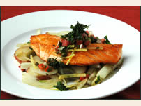

|
| Home » Menu |
| Cuisine Chef Ipsum Articles Special Events Location Reservations Contact Us |
MenuAppetizers
Roasted Tomato Soup - served with goat cheese croutons and basil puree.
·
Summer Salad - organic butter lettuce with apples, blood oranges, and
gorgonzola, tossed with raspberry vinaigrette. ·
Fondue of Brie, Goat Cheese, and Gruyere - served with green apples and garlic crostini. Good for sharing.
·
Crispy Flatbread - topped with asiago, prosciutto, and rocket.
·
Yellow-fin Ahi Tatar – served on a bed of shredded cabbage
with avocado relish and a green peppercorn dressing. Entrees
Pancetta-wrapped Sea Scallops – drizzled with tarragon puree. Served with baked cauliflower au gratin in a tangy Gruyere sauce.
·
Cajun Seafood Bouillabaisse – with crawfish, scallops, catfish, crab, and mussels. Served with Southern-style cornbread and honey butter.
·
Cavatappi Pasta with Spicy Chickpea Sauce – tossed with grilled eggplant, green olives, and sun dried tomatoes. Topped with Mediterranean feta.
·
Sage-rubbed Double-cut Pork Chop – topped with a ragout of mushrooms and chunky pancetta. Served with griddle corn cakes.
·
Lasagna Bolognese - house-made pasta between layers of slow-cooked pork ·
Sake-soaked Kobe Beef Tartar - served with fontina-stuffed squash blossom tempura with cream wasabi sauce. Dessert
Chocolate Mouse Granita – served in a martini glass with a spiced-orange meringue cookie.
·
Baked Pears with Caramel Sauce - topped with house-made vanilla-bean ice cream. ·
Pumpkin Creme Brulee - served with our famous ginger snap cookies. ·
New York Cheesecake - creamy traditional cheesecake topped with ·
Sacher Torte - three layers of dark chocolate cake, filled with house-made apricot jam, covered in a creamy, rich chocolate glaze. Friday catch of the day:

Alaskan Halibut with a Rich Loire Valley Beurre Blanc Sauce -
served with mashed purple Peruvian potatoes and haricot verts. ·
Recommended pairing: ’98 Passi Emilio Vineyards Sauvignon Blanc
|